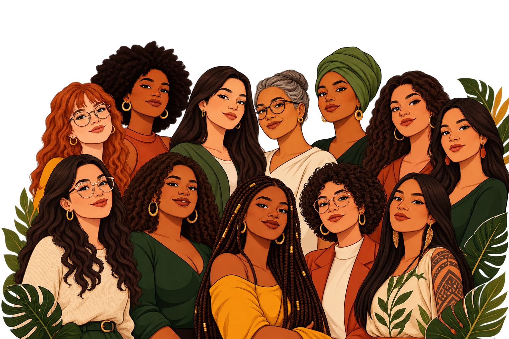

Descubra possibilidades
Explore seus interesses e encontre um ponto de partida na tecnologia.
Conectando talentos, oportunidades e conhecimento para mais mulheres na tecnologia.
♡ Para começar, recomeçar e ir além.
Você não precisa
caminhar sozinha.
Explore seus interesses e encontre um ponto de partida na tecnologia.
Compartilhe aprendizados com outras mulheres, no seu ritmo.
Conheça trajetórias reais e novas oportunidades de aprender.
Já pensou em descobrir qual carreira da tecnologia mais combina com seus gostos, interesses e estilo de personalidade? Responda ao nosso quiz vocacional e descubra novas possibilidades para construir seu futuro na tecnologia!
Explore seus interesses e encontre um ponto de partida na tecnologia.
Conheça mulheres que estão transformando o mundo da tecnologia com suas ideias,
talentos e conquistas. Inspire-se em suas trajetórias, descubra diferentes áreas de
atuação e veja como elas superaram desafios, construíram suas carreiras e abriram
caminhos para outras mulheres no universo da inovação.

⌖ Manaus · AM
Professora da UFAM desde 2002, atua no movimento de mulheres e no Cunhantã Digital.

⌖ Manaus · AM
Professora do Instituto de Computação da UFAM. Pesquisa dados e redes, ensino de programação e bioinformática.
Aqui você encontra diversas comunidades de tecnologia, inovação e criatividade. Explore, descubra novos interesses e conecte-se com pessoas que compartilham das mesmas ideias que você!
Comunidade que promove educação, mentoria, visibilidade e oportunidades para mulheres que desejam iniciar ou crescer profissionalmente na tecnologia.
Participar ↗Grupo local de desenvolvedores, estudantes e entusiastas que compartilham conhecimento, organizam atividades e fortalecem o ecossistema de software em Manaus.
Participar ↗Venha participar dos nossos eventos e mergulhar no universo da tecnologia! Será uma oportunidade incrível para aprender, compartilhar conhecimentos, trocar experiências e descobrir novas possibilidades de inovação.
Meetup de tecnologia com palestras sobre inteligência artificial, carreira em IA, desenvolvimento, qualidade de software e segurança. A partir das 18h, na UNIP Campus Manaus.
Atividade presencial no Samsung Ocean Manaus, das 18h às 23h, com programação sobre inteligência artificial, saúde digital, realidade aumentada e inovação.
Evento sobre aplicação prática da inteligência artificial em vendas, negócios e operações, com palestras, feira de negócios e networking. Das 8h às 19h, em Manaus.